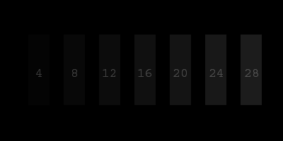
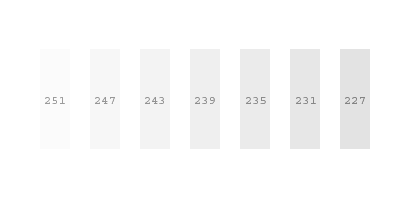
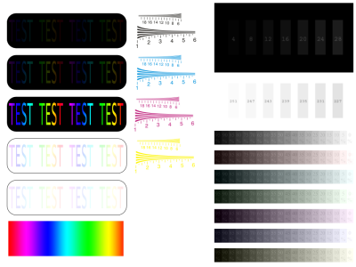

Da bi vaš monitor bio ispravno podešen i omogućio vam da jasnije i bolje vidite grafiku i fotografije potrebno ga je kalibrirati. Ako monitor nije kalibriran to se posebno odražava na prikaz područja slike koja su izrazito tamna ili izrazito svjetla. Na loše podešenim monitorima do izražaja dolazi loš kontrast ili je teško razlikovati detalje koji se nalaze u tamnom području (razmazane sjene bez detalja), odnosno u svijetlom području (dolazi do gubitka oštrine svijetlih oblika na svijetloj podlozi).
1. Da bi ispravno kalibrirali monitor potrebno je osigurati nekoliko
osnovnih uvjeta:
.:. prethodno namještena odgovarajuća rezolucija i maksimalna
dubina boja (32 bit, true color)
.:. ako monitor omogućuje kontrolu balansa bijele boje ("temperatura"
boje), postavite je na 6500 K (D65)
.:. bilo bi poželjno da su svjetlosni uvjeti u prostoriji u kojoj
se nalazi monitor takvi da je monitor dominantni izvor svjetla,
ili barem da niti jedan izvor svjetla izravno ne osvjetljava monitor
.:. većina CRT monitora u izborniku ima funkciju DEGAUSS, koja
poništava zaostale magnetske smetnje - pokrenite je prije kalibracije.
2. Namještanje razine crne boje:
.:. namjestite kontrolu CONTRAST na njenu maksimalnu vrijednost
.:. nakon toga pomoću kontrole BRIGHTNESS podesite sliku tako
da na donjoj grafici možete jasno vidjeti granice vertikalne
trake označene brojem 12, dok se trake označene sa 8 i 4 stapaju
sa crnom bojom (pri čemu se traka br. 4 jedva primjetno razlikuje
od crne okoline)

Kad je razina crne boje jednom namještena više nema potrebe
za mijenjanjem vrijednosti kontrole BRIGHTNESS, osim pri ponovnoj
kalibraciji.
3. Namještanje razine bijele boje:
.:. koristeći funkciju CONTRAST smanjujte njenu vrijednost dok
ne postignete to da granica trake označene brojem 251 bude vidljiva
i da je istovremeno pozadina čiste i jasne bijele boje

Ova kratka procedura je obično dovoljna da bi dobili pravilan prikaz boja na monitoru, ali ako vam se i dalje čini da prikaz nije baš najbolji otvorite grafiku za kalibraciju u svojem pregledniku slika i probajte otkriti što ne valja.

{kind=link}